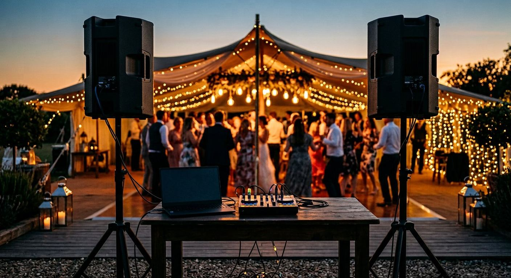

How to DJ at a Wedding: Complete Guide for 2026
Step-by-step guide to DJing a wedding — equipment list, playlist strategy, timeline management, and the requests question.

Disclosure: This page uses affiliate links. We may earn a commission at no extra cost to you. Full disclosure →
Wedding DJing pays $500–$2,500 per event and has a lower technical bar than club DJing. It also has much higher stakes for failure — this is someone's one day. Here's how to prepare properly and get paid well.
Equipment for Wedding DJs
Minimum pro setup: two CDJs or a multi-channel controller + laptop, a powered PA system with sub (minimum 1,500W for a room of 100 guests), a wireless microphone for announcements, and backup audio on a phone. Recommended gear:
- Controller: Pioneer DDJ-FLX10 or similar 4-channel unit
- PA: QSC K12.2 (×2) + QSC KS118 subwoofer
- Wireless mic: Shure BLX24/SM58
- Cables: always bring 2× spares of every cable you own
Timeline Management
A standard 4-hour wedding reception has clear sections: cocktail hour (background jazz/acoustic), dinner (ambient/soft pop), first dance + family dances (pre-requested specific songs — DO NOT improvise these), cake cutting, open dancing (peak energy), and last dance (slow closer). Get the timeline in writing from the couple 2 weeks before.
Handling Requests
Handle requests honestly while keeping the couple's agreed music and timeline first. Check a guest's request against the couple's must-play and do-not-play preferences. If it fits a later part of the agreed set, note it and explain when you expect to play it; if you cannot commit to it, decline politely instead of agreeing. For example, when a guest requests a song that does not fit the current dancing, say: 'I can check whether it fits later, but I cannot commit to it.' Offer an alternative that fits the couple's plan, and keep any commitment you do make.
The Backup Plan
Bring a second laptop with your full music library pre-loaded. Bring two power strips. Know where the venue's circuit breakers are. Know your venue manager's phone number. Professional wedding DJs earn their rate by never having a technical failure ruin a ceremony.
Bottom line: Read the room early, build a robust emergency playlist, and always confirm the final song with the couple in advance.
Check current prices and deals:
Wedding DJ Timeline
| Time Slot | Music Style | BPM Range | Vibe |
|---|---|---|---|
| Cocktail Hour | Lounge / Jazz | 70-100 | Relaxed, conversational |
| First Dance | Romantic Ballad | 60-80 | Intimate, spotlight |
| Dinner Reception | Easy Listening | 80-110 | Background, social |
| Dance Floor Opens | Pop / R&B | 110-120 | Build energy gradually |
| Peak Hours | Dance / Hits | 120-130 | High energy, request zone |
| Last Dance | Classic Closer | Any | Celebratory send-off |
Wedding DJ Complete Planning Guide
Wedding DJing is one of the most demanding and financially rewarding forms of DJ work. Unlike club DJing, where creative freedom is the expectation, wedding DJing requires you to serve a specific client vision across a structured multi-hour event with no margin for error. This guide covers everything you need to know to plan and deliver a professional wedding DJ performance.
What Couples Actually Expect from a Wedding DJ
The number one mistake most first-time wedding DJs make is treating a wedding like a club gig. Here is what separates professional wedding DJing from club or party work:
- You are there to serve the client's vision, not your own taste — a club DJ selects tracks based on their own reading of the floor; a wedding DJ selects tracks based on a couple's preferences, even if those preferences differ from your own taste
- Announcements and MC duties are expected — most weddings require introductions, toasts, first dance announcements, and other spoken MC moments throughout the event
- Volume management across different event phases — cocktail hour (background music, low-medium volume), dinner (conversational level), dancing (full energy); each phase has distinct requirements
- Long set preparation from a specific list — couples typically provide a must-play list, a please-play list, and a do-not-play list that must all be respected
- Professional appearance and punctuality — wedding venues have strict load-in and sound-check schedules that must be respected
Pre-Event Preparation Checklist
| Task | Timeline | Notes |
|---|---|---|
| Initial consultation call with couple | As early as possible after booking | Capture preferences, must-plays, do-not-plays, event timeline |
| Confirm event timeline and key moments | 4-6 weeks before event | First dance song, cake cutting, last dance, specific announcement cues |
| Build the playlist | 2-3 weeks before event | Organise by phase; use the highest-quality source files you can get, prefer lossless where it helps, and confirm each track plays back in your software and decks |
| Venue walkthrough | 1-2 weeks before event | Check power outlets, cable runs, PA system compatibility, noise curfew |
| Equipment check | 2-3 days before event | Test all cables, speakers, backups; charge wireless components |
| Load-in time confirmed | Day before event | Ensure you know exact load-in window and parking arrangements |
Essential Wedding DJ Equipment
- Primary controller or CDJ setup — your main performance hardware, fully tested and confirmed working
- Backup controller or laptop — a second complete system that can be switched to within 30 seconds if your primary fails; non-negotiable for professional work
- PA speakers — powered speakers with minimum 12-inch woofers for a dance floor of 50+ guests; more powerful for larger rooms
- Wireless microphone system — essential for announcements; UHF wireless (not 2.4 GHz Bluetooth) for venue reliability
- DJ booth monitor — a small powered speaker facing the DJ position so you can hear the master mix
- Lighting — uplighting (battery-powered units for flexibility) and dance floor lighting transform venue atmosphere significantly
- All cables doubled — every critical cable (XLR, RCA, power) must have a spare in your kit
Wedding DJ Pricing
Wedding DJ rates vary considerably by market, experience level, and package contents. Typical ranges in the US market as of 2026:
- Beginner (first 1-5 weddings): $500 — $1,000 for 4-6 hours
- Intermediate (established local DJ): $1,200 — $2,500 for 4-6 hours with full setup
- Professional (full package with lighting): $2,500 — $5,000+
Never underquote to win bookings if it means running at a loss — account for equipment, travel, preparation time, and wear on equipment. Most wedding DJs report that their real costs exceed $400-600 per event before profit is considered.
Frequently Asked Questions
How much do wedding DJs charge?
Typical rates: $500–$1,000 for beginners (first 5 weddings), $1,000–$1,800 for experienced DJs, $2,000–$3,500+ for high-end wedding market DJs in major cities.
Do I need special insurance to DJ weddings?
Yes. Most venues require liability insurance for vendors. DJ liability insurance runs $180–$350/year through providers like DJ Insurance or Next Insurance.
Should I use streaming services or download all songs?
Always download and own your music. Streaming can fail at the worst moment. Never DJ from Spotify or Apple Music live.